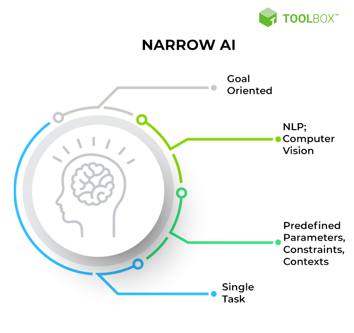

Artificial Narrow Intelligence
HOME

Artificial intelligence (AI) is the simulation of human intelligence in computers that have been trained to think and behave like humans. The word may also refer to any computer that exhibits human-like characteristics like learning and problem-solving.

Artificial Narrow Intelligence (ANI), or narrow intelligence, is the courteous name for the weak AI. Narrow artificial intelligence is a type of artificial intelligence in which a learning algorithm is created to perform a single function. Any knowledge acquired through this activity will not be applied to other activities.
Artificial narrow intelligence is designed to complete a single activity without human help successfully. Language translation and image recognition are two examples of common uses for narrow AI.
Artificial narrow intelligence systems can perform in real-time but retrieve data from a particular database. As a result, these technologies aren’t capable of handling other tasks.
Artificial narrow intelligence is not conscious, aware, or motivated by emotion in the same way that humans are. Even if Narrow AI appears to be considerably more sophisticated, it operates within a pre-determined, pre-defined scope.
Today’s machine intelligence is all Narrow AI. Google Assistant, Google Translate, Siri, and other natural language processing tools are examples of Narrow AI. Although these tools appear to be able to interact with us and process human language, they lack the capability for autonomous reasoning, self-awareness, consciousness, and genuine intelligence. In other words, they are unable to think.
The question is: What are the characteristics of an intelligent machine? In other words, what distinguishes a conscious computer from one that merely responds to queries? The difference is that a conscious computer can think independently, make judgments, and make decisions. We already have this ability as human beings. When we talk to Siri, it isn’t performing a conscious function of answering our questions. Rather, what Siri is capable of — what it was designed to do — is human process language and submit it to a search engine for retrieval.
This explains why, when we ask Siri or Google Assistant abstract questions like “What is the meaning of life?” or “How do I deal with a personal problem,” we frequently get evasive answers that make no sense or links to pre-existing articles from the Internet that address these topics. However, when we ask Siri what the weather is outside, we get a proper answer. These digital assistants were designed to handle basic inquiries.
People can perceive their surroundings, be conscious, and experience emotionally charged reactions to events. In many cases, AI agents lack the flexibility and adaptability to think as we do. Except that a self-driving car comprises numerous artificial narrow intelligence systems, even something as complicated as a self-driving automobile is labeled Weak AI.